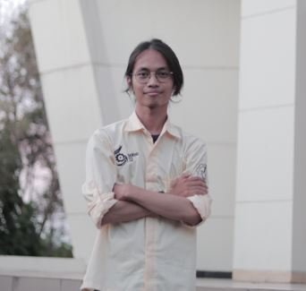

Halo aku Baharian Diko, asal kabupaten Bogor, Jawa barat!
Aku sedang berkuliah di ITS, Institut Teknologi Sepuluh Nopember

- Nama lengkap
- Baharian Diko
- Tempat Tanggal lahir
- Cianjur, 16 Januari 2003
Berikut adalah pengalaman saya selama berkuliah di ITS!
| Pengalaman |
| Wakil Kepala Divisi Branding Ini Lho ITS! 2022 |
| Staff Dokumentasi Gerigi ITS 2021 |
| Staff Media & Production Information System Expo! 2021 |
| Staff Publikasi dan Sosial Media Cut Film Festival! 2021 |
| Staff Eksebisi UKM CLICK ITS Kabinet Raganyala |
| Staff Publikasi Ini Lho ITS! 2020 |
| Staff Publikasi dan Dokumentasi MABA CUP 2020 |
Pendidikan
- Institut Teknologi Sepuluh Nopember (2020 - Sekarang)
- SMK Negeri 1 Cibinong (2017 - 2020)
Pelatihan
- Basic Media School Adyacatha 2020
- PKTI-TD
- LKMW-TD